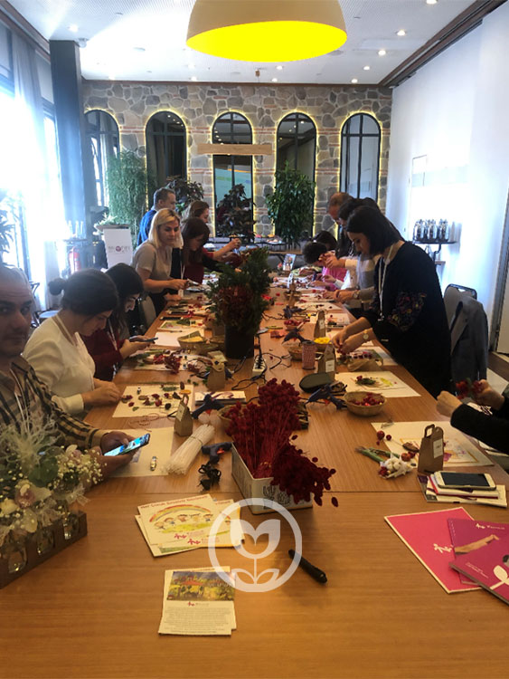
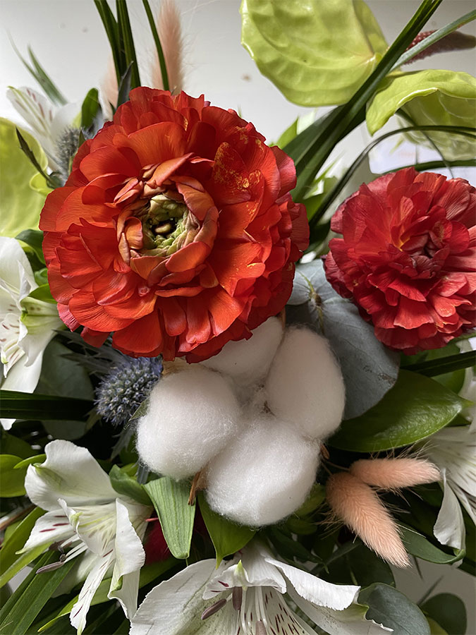
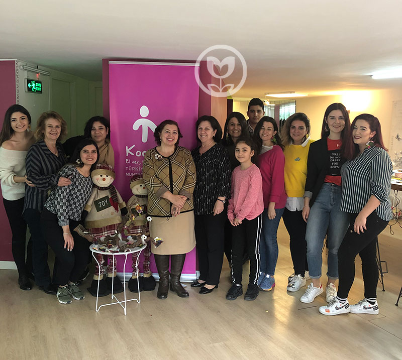

Afloday · Doğadan Gelişim Atölyesi
Doğada öğrenilen,
elde kalan bir gün.
Bitkilerin, çiçeklerin başrolde; katılımcının yönetmen olduğu atölyeler tasarlıyoruz.
Kurumsal hizmetlerGelişim atölyeleri · Hobi atölyeleri · Danışmanlık
Hobi atölyeleriÇiçek · Bitki · Çocuk (+3 ve +5 yaş)
BiçimYüz yüze ya da tüm Türkiye geneli online
Tanıtım filmi
Geleceği Doğadan Tasarla
Doğa temelli eğitim yaklaşımımızı anlatan filmimiz.
Doğanın milyarlarca yıllık bilgeliğinin, günümüzün en karmaşık zorluklarına nasıl sürdürülebilir cevaplar sunduğunu anlatıyoruz.
Elin öğrendiğini zihin unutmuyor.
Yıllardır etkinliği ispatlanmış aktif öğrenme metodunu kullanıyoruz. Rutin hayatta rastlanmayan doğal malzemeler, zihne yeni kayıtlar atıyor.
İki yol
Ekibiniz için mi, kendiniz için mi?
Aynı atölye anlayışı, iki farklı ihtiyaç.

Kurumsal Hizmetler3 hat
Kurumsal Programlar
Doğadan gelişim atölyeleri, doğadan hobi atölyeleri ve sosyal sorumluluk & iş danışmanlığı. Yüz yüze ya da Türkiye geneli online.

Çiçek · Bitki · Çocuk16 atölye
Hobi Atölyeleri
Çiçekle, toprakla, kendi ellerinizle. Yetişkin ve çocuk atölyeleri — deneyim gerekmez.
Katalog · 16 atölye
Atölye kataloğundan
Çiçek tasarım, bitki tasarım ve çocuk hobi atölyeleri.

BitkiYetişkin
Kokedama Tasarım Atölyesi

BitkiYetişkin
Kavanoz Teraryum Tasarım Atölyesi

ÇiçekYetişkin
Mevsim Kapı Çelengi Tasarımı Atölyesi
ÇiçekYetişkin
Taze Çiçek Buket & Aranjman Tasarım Atölyesi

ÇiçekYetişkin
Kuru Çiçek Fanus Tasarım Atölyesi

BitkiYetişkin
Sukulent Aranjman Atölyesi

BitkiYetişkin
Doğa Çerçeve Tasarım Atölyesi

ÇiçekYetişkin
Çiçek Çerçeve Tasarım Atölyesi
Kaydırarak gezin · 16 kayıttan 8'i

Bitkiler, çiçekler başrolde; katılımcı yönetmen.
Kurumlara
Üç hizmet hattı
Kurum kültürü ve çalışan yetkinlik gelişimi kapsamında, konsept geliştirerek koçluk yaklaşımıyla.
Kurum kültürü ve çalışan yetkinlik gelişimi kapsamında, koçluk yaklaşımıyla doğa temalı atölyeler. Eğitim Doğa Temelli Eğitimlerimiz
Doğayla etkileşimde anlam bulmak — üç ilke üzerine kurulu bir eğitim programı. Danışmanlık Sosyal Sorumluluk & İş Danışmanlığı
Kurum kültürüne göre sosyal sorumluluk proje tasarımı, süreç danışmanlığı ve raporlama.
Afloday
Çiçeklerin, doğanın iyileştirici etkisi.
Doğa temasıyla koçluk dokunuşlarıyla aktif öğrenme desteği sağlayan atölyelerle gelişimi, dakikalar sürse de doğaya dönüş imkânı sunduğumuz hobi edinme atölyeleriyle eğlence, sosyalleşme, yaratıcı düşünmeyi destekliyoruz.
Doğadan ilham alarak tasarladığımız özgün ürünleri ise “Doğadan Tasarım Mağazası” ile doğa aşıklarıyla buluşturuyoruz.
Afloday Doğadan Gelişim Atölyesi olarak; çiçeklerin, doğanın iyileştirici etkisini eğitimle, atölyeyle, özgün tasarımlarla iş ve yaşam alanlarına taşıyoruz.
Sürdürülebilirlik
Paylaştıkça var olacağımızı düşünüyoruz.
2019 yılında her ay iki adet ücretsiz Koruncuk Gönüllü Atölyesi gerçekleştirdik; yaklaşık 500 kişiye birebir eriştik. 2022 yılından itibaren projeyi kurum ve bireylerin atölye sponsorluğunda sürdürüyoruz.
Geleceği Yeşil Tasarla Projesi ise çevresel sürdürülebilirlik kapsamında yetişkin ve çocuklarda davranış geliştirmeyi hedefliyor.

Sürdürülebilirlik2019 —
Gülümseyen Yarınlar Projesi · Koruncuk Vakfı gönüllü atölyeleri
Afloday
Referanslarımız